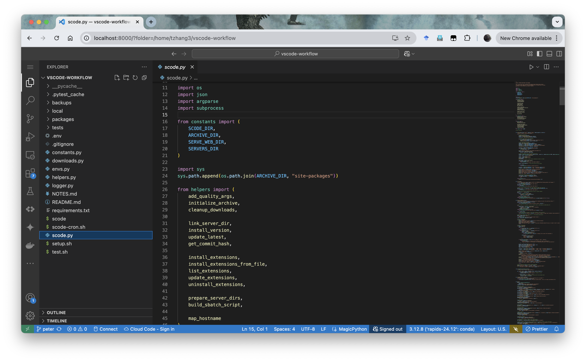

Getting Started with scode
To support the growing demand for interactive development on Midway, RCC provides scode: a command-line utility that allows users to securely launch, manage, and access Visual Studio Code (VSCode) web sessions running entirely on compute nodes from their browser.
scode addresses the challenge of setting up a VSCode session on compute nodes, which lack direct Internet access due to security considerations. It enables users to interactively develop, debug, and optimize HPC applications without the overhead of repeatedly submitting batch jobs, streamlining workflows such as model training, data analysis, and code prototyping.

This guide provides a minimal and reliable workflow to help you get started with a VSCode Web session, monitor its status, and connect securely from your local machine.
To install extensions, see the Extension Installation Guide. For more information on using scode, please refer to the SCode API Documentation.
Quick Start
| Steps | Commands |
|---|---|
| Load SCode module | module load scode |
| Launch VSCode Server | scode serve-web -- --account <pi-account> --time 01:00:00 --mem 16G |
| List jobs and get job ID | scode jobs list |
| Check status and get conncection instructions | scode jobs status <job_id> |
| Cancel a job | scancel <job_id> |
Step 1: Load scode Module
Before using scode, load the module in your terminal:
module load scode
This will activate the scode command in your environment. You can add this command to your .bashrc or .bash_profile for automatic loading in future sessions.
echo "module load scode" >> ~/.bashrc
source ~/.bashrc # Reload the shell configuration
Step 2: Launch a VSCode Server
Once the module is loaded, you can submit a job to start a VSCode Web server. Run the following command from your login node:
scode serve-web -- --account <pi-account> --time 01:00:00 --partition caslake --mem 16G
<pi-account>: Replace this with the name of your PI or course account. Use commands such asidandaccounts listto check the accounts you are a member of.- Additional slurm options can be added to the
scode serve-webcommand after the--separator. Refer to Slurm User Guide and Sbatch Documentation for more details on job submission options.
This command will:
- Submit a SLURM job to run the VSCode Web server
- Prepare the environment and server installation automatically
- Return the job ID and logging paths
Example output:
Submitting SBATCH to serve VSCode environment.
Submitted batch job 30317404
sbatch: Verify job submission ...
sbatch: Using a shared partition ...
sbatch: Partition: caslake
sbatch: QOS-Flag: caslake
sbatch: Account: pi-account
sbatch: Verification: ***PASSED***
SBATCH job /home/yourusername/.scode/sbatches/scode-web_20250409_101953.sbatch submitted successfully.
Output will be directed to /home/yourusername/.scode/logs/scode-web_30317404.out.
Errors will be directed to /home/yourusername/.scode/logs/scode-web_30317404.err.
VSCode server is starting with Slurm Job ID 30317404.
Use `scode jobs status 30317404` to check the status of the server.
Use `scancel 30317404` to cancel the server job.
Step 3: Check Job Status
To view active VSCode Server jobs:
scode jobs list
To check the status of a specific job and retrieve connection details, use the job ID returned from the previous step:
scode jobs status 30317404
If the job is running, you will receive detailed connection instructions.
Example output:
VSCode job 30317404 is running on 1 nodes: midway3-0024
Primary node: 10.50.250.24
Environment: /home/yourusername/.scode/envs/stable/default
To connect to the VSCode Web GUI you need to create an SSH tunnel from your local machine to the primary node above. This can be done with the following command to be run on your local machine (e.g., PowerShell in Windows):
ssh -L 8000:10.50.250.24:61028 yourusername@midway3.rcc.uchicago.edu
Once the tunnel is created, you may access the VSCode Web GUI by entering the following address in your browser:
http://localhost:8000/?tkn=f1c72d89-4a5e-43d2-ae1b-9b8237dce021
Server outputs are being written to /home/yourusername/.scode/logs/scode-web_30317404.out.
Server errors are being written to /home/yourusername/.scode/logs/scode-web_30317404.err.
You may use `squeue -j 30317404` to see more information about this job, or cancel it with `scancel 30317404`.
In this output:
8000is a port on your local machine. All traffic to this port will be forwarded to the remote VSCode Web server with SSH tunnel. You can change this port if it is already in use.61028is the port on the remote server where the VSCode Web server is running, which is randomly assigned by SCode.
Step 4: Create an SSH Tunnel from Your Local Machine
On your local machine, open another terminal, and run the SSH command shown in the job status output. For example:
ssh -L 8000:10.50.250.24:61028 yourusername@midway3.rcc.uchicago.edu
This command creates a secure channel between port 8000 on your local computer and the remote VSCode Web server running inside the cluster.
- Be sure to use the IP address and port number from your actual job output.
- Use a different local port if
8000is already in use.
Keep this terminal open while you are working inside the VSCode Web session. Closing the tunnel will interrupt your connection.
Step 5: Access VSCode in Your Browser
Once the SSH tunnel is active, follow the link from scode jobs status:
http://localhost:8000/?tkn=f1c72d89-4a5e-43d2-ae1b-9b8237dce021
Modify port 8000 if you used a different local port in Step 4.
You will be redirected to a fully functional VSCode Web interface running on the cluster, within your compute environment.
Step 6: Ending the Session
When you are done:
- Close the browser tab (to avoid dangling temp files in your home directory)
- Optionally cancel the SLURM job manually to avoid resource misuse:
scancel 30317404
If not manually cancelled, the job will terminate when the time limit expires.
Now you can close the SSH tunnel terminal as well.
Notes
- The SSH tunneling command must be executed from your local machine, not from within the cluster.
- If the job is canceled or the server encounters an error, the SSH tunnel may output messages such as:
channel x: open failed: connect failed: Connection refused. In such cases, try restarting the server and re-establishing the tunnel. - Ensure that port
8000on your local machine is free before running the tunnel command. If it's in use, modify thessh -Lport accordingly. scodeuses a dummyHTTP_PROXYto bypass the VSCode Server update check, which would otherwise block startup on air-gapped compute nodes. You may see log warnings like:error POST connect ECONNREFUSED 127.0.0.1:9999. These can be safely ignored.- If server information is not immediately available when running
scode jobs status <job_id>, wait a few moments and rerun the command, or check the SBATCH logs for more information. The server startup might be still in progress. - For more information, refer to the SCode API Documentation, or run
scode --helpandscode <command> --help.